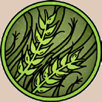
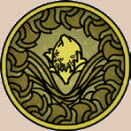
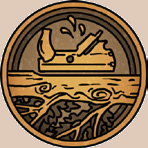

Landschaftstyp: Der Landschaftstyp, den die Pflanze als natürlichen Lebensraum bevorzugt.
Für einige Pflanzen gelten besondere Umstände, die ebenfalls hier erläutert werden.
Eine Anmerkung wie sehr selten, selten, eher selten oder gelegentlich gibt an, wie oft man im Vergleich zu anderen Pflanzen auf die vorgestellte Art trifft.
Ist kein Eintrag vorhanden, kommt die Pflanze gewöhnlich, d. h. mit alltäglicher Häufigkeit, vor.
Regionen: Hier werden derographische Untertypen genannt, um Lebensräume innerhalb der Landschaftstypen abzugrenzen.
Für einige Pflanzen gelten besondere Umstände, die ebenfalls hier erläutert werden.
Suchschwierigkeit: Angabe zu Erschwernissen bei Proben auf Pflanzenkunde (Heilpflanzen, Giftpflanzen oder Nutzpflanzen), bedingt durch Seltenheit und Tarnmöglichkeiten der Pflanze.
Bestimmungsschwierigkeit: Angabe zu Erschwernissen bei Proben auf Pflanzenkunde (Heilpflanzen, Giftpflanzen oder Nutzpflanzen), bedingt durch Vorhandensein charakteristischer Merkmale und Aufwand.
Anwendungen: Gibt an, wie viele Anwendungen bei einer erfolgreichen Probe auf Pflanzenkunde (Heilpflanzen, Giftpflanzen oder Nutzpflanzen) gefunden werden, Angabe nach QS.
Wirkung: Schlüsselt auf, welche Wirkungen die Pflanze hat und in welcher Weise diese ausgelöst werden.
Roh:
Angaben zur Wirkung der rohen Pflanze.
(Für Definition des Begriffs Roh siehe unter „Haltbarmachung:“).
Manchmal ist hier auch eine Giftwirkung in Kurzform angegeben, die keine Giftprobe benötigt, sondern automatisch eintritt, da das Gift nicht konzentriert vorliegt.
Die Wirkung wird jeweils einem oder mehreren der Typen zugeordnet. Siehe dazu den anschließenden Pergamentkasten Pflanzen- und Rezepttypen.
Berührung: Wirkung beim Berühren der Pflanze. Spezifische Pflanzenteile sind ggf. angegeben.
Einatmung: Wirkung beim Einatmen von Teilen der Pflanze (z. B. Pollen, zerkleinerte oder pulverisierte Pflanzenteile, Rauch aus verbrannten Pflanzenteilen). Spezifische Pflanzenteile sind ggf. angegeben.
Verzehr: Wirkung beim Verzehr bzw. der Einnahme von Teilen der Pflanze. Spezifische Pflanzenteile sind ggf. angegeben.
Verarbeitet: siehe Rezepte
Preis: Kosten einer Anwendung der Pflanze in Silbertalern. Die erste Zahl gibt den Wert der rohen Grundmenge pro Anwendung an, die zweite den Preis, den ein Held bei einem Alchimisten oder Kräuterhändler zahlen müsste.
Rezepte: Eine Liste von Verarbeitungsmöglichkeiten nach Rezepttyp. Die Wirkung wird jeweils einem oder mehreren der oben genannten Typen zugeordnet.
Pflanzliche Hilfsmittel: Einfachste Rezepte, für deren Zubereitung neben der Pflanze nur alltägliche Materialien wie Messer, Wasser, Öl und Feuer benötigt werden. Es wird keine spezielle Zutat neben der Pflanze benötigt.
Pflanzliche Gifte: Gifte, die aus der Pflanze gewonnen werden können. Es wird keine spezielle Zutat neben der Pflanze benötigt.
Pflanzliche Rauschmittel: Rauschmittel, die aus der Pflanze gewonnen werden können. Es wird keine spezielle Zutat neben der Pflanze benötigt.
Elixiere: Rezepte, die eine Probe auf Alchimie (Elixiere) verlangen und neben der Pflanze weitere Pflanzen sowie tierische und mineralische Ingredienzien benötigen können.
Alchimistische Gifte: Rezepte für Gifte, die eine Probe auf Alchimie (alchimistische Gifte) verlangen und neben der Pflanze weitere Pflanzen sowie tierische und mineralische Ingredienzien benötigen können.
Alchimistische Rauschmittel: Rezepte für Rauschmittel, die eine Probe auf Alchimie verlangen und neben der Pflanze weitere Pflanzen sowie tierische und mineralische Ingredienzien benötigen können.
Volksbrauchtum: Angaben zu Sagen und Legenden rund um die Pflanze, die sich auf experimentelle, improvisierte und traditionelle Anwendungsmöglichkeiten beziehen.
Haltbarkeit:
Roh: siehe Haltbarmachung
Roh bedeutet nicht zwangsläufig frisch oder lebendig, sondern kann sich auch auf eine haltbar gemachte (z. B. getrocknete) Pflanze beziehen.
„Roh“ steht hier im Gegensatz zu „verarbeitet“. Verarbeitet bedeutet, dass die Wirkung durch ein Rezept verändert wurde.
Haltbarmachung ist kein Rezept, da keine weiteren Wirkstoffe hinzugefügt werden.
Verarbeitet: Wird ggf. angegeben, wenn auf die Pflanze eine spezielle Haltbarmachungsmethode angewendet werden kann, welche neben verlängerter Haltbarkeit alternative Wirkungen hervorruft.
Dennoch entsteht diese neue Wirkung aus der Pflanze heraus und nicht durch zusätzliche Wirkstoffe.
Pflanzen- und Rezepttypen
Wenn bei einer Probe auf Pflanzenkunde eines der Anwendungsgebiete Heilpflanzen, Giftpflanzen oder Nutzpflanzen gewählt werden muss, dienen diese Symbole ebenfalls der Identifikation des Anwendungsgebiets.
Halte bei den Angaben zur Wirkung der Pflanze Ausschau.
Manche Pflanzen können mehreren Typen gleichzeitig zugeordnet werden.
Dann kann für die Probe frei zwischen den zutreffenden Anwendungsgebieten gewählt werden.
Heilpflanzen
heilen Krankheiten, entfernen Zustände, helfen bei der Regeneration oder heilen LeP, ggf. sogar AsP oder KaP.



Pflanzliche Rezepte werden mit einer Probe auf Pflanzenkunde umgesetzt. Regeltechnisch werden sie in drei Kategorien unterteilt:
Pflanzliche Hilfsmittel benötigen für ihre Herstellung eine bestimmte Hauptpflanze als Zutat.
Diese Hauptpflanze kann nicht im Sinne der alchimistischen Äquivalenzlehre ersetzt werden.
Als Hilfsmittel zur Herstellung von pflanzlichen Hilfsmitteln werden höchstens ein Messer, Feuer und ein Träger- bzw. Lösemittel wie Wasser oder Öl benötigt, genaueres ist unter Typische Hilfsmittel angegeben.
Die Probe auf Pflanzenkunde, die zur Herstellung abgelegt werden muss, wird um die Stufe der Verarbeitungsschwierigkeit erschwert.
Aus einer Anwendung der Pflanze wird jeweils eine Anwendung oder ein Exemplar des Hilfsmittels gewonnen.
Der Ladenpreis für pflanzliche Hilfsmittel entspricht jeweils pauschal den Kosten für eine Anwendung der jeweiligen pflanzlichen Hauptzutat, wenn man diese bei einem Händler erwerben würde.
Darin sind die zusätzlichen Materialkosten sowie der Aufwand der Herstellung inbegriffen.
Pflanzliche Gifte werden durch einfaches Abkochen oder anderweitiges Herauslösen aus einer bestimmten Pflanze gewonnen.
Die Regeln des Vorgangs gleichen der Herstellung eines pflanzlichen Hilfsmittels mit einer Verarbeitungsschwierigkeit als Erschwernis in Höhe der halben Giftstufe (es wird zugunsten des Helden gerundet).
Durch diesen Prozess gewinnt das Gift der Pflanze an Konzentration und damit an Wirkkraft, allerdings wird es dadurch möglich, mit Seelenkraft oder Zähigkeit Widerstand zu leisten.
Bei erfolgreichem Widerstand gilt die schwächere Wirkung des Giftes. Aus einer Anwendung der Pflanze wird jeweils eine Anwendung des Giftes gewonnen.
Pflanzliche Rauschmittel werden durch einfaches Abkochen oder anderweitiges Herauslösen oder Konzentrieren aus einer bestimmten Pflanze gewonnen.
Die Regeln des Vorgangs gleichen der Herstellung eines pflanzlichen Hilfsmittels mit einer Verarbeitungsschwierigkeit als Erschwernis in Höhe der halben Giftstufe.
Durch diesen Prozess gewinnt das Rauschmittel der Pflanze an Konzentration und damit an Wirkkraft, allerdings wird es dadurch möglich, mit Seelenkraft oder Zähigkeit Widerstand zu leisten.
Bei erfolgreichem Widerstand gilt die schwächere Wirkung des Rauschmittels.
Pflanzliche Rauschmittel können Nebenwirkungen haben und bei einer Überdosierung Zusatzeffekte entwickeln.
Ebenso erzeugen sie eventuell Sucht. Aus einer Anwendung der Pflanze wird jeweils eine Anwendung des Rauschmittels gewonnen.
In der Natur wachsen reichlich Pflanzen mit ganz unterschiedlichen Wirkungen.
Gerade im mittleren und südlichen Aventurien finden Helden fast überall Pflanzen, die sie für ihre Zwecke nutzen können.
Allerdings ist die Suche nach speziellen Pflanzen deutlich schwieriger, da man einerseits wissen muss, welchen Landschaftstyp die Pflanze bevorzugt, die man sucht, und weiterhin, wie und wo exakt man am besten nach ihr Ausschau hält.
Meist ist es eine langwierige Aufgabe und man braucht einige Stunden, bis man die gesuchte Pflanze entdeckt.
Grundsätzlich gibt es zwei Arten der Kräutersuche, die sich leicht voneinander unterscheiden:
- Suche nach einer speziellen Pflanzenart: Bei dieser Version sucht der Held ganz gezielt nach einem bestimmten Kraut, etwa Wirselkraut, Olginwurz oder Purpurnem Lotos.
- Allgemeine Kräutersuche: Statt eine spezielle Pflanze zu suchen, kann der Held auch losziehen und nach allen Pflanzen suchen, die ihm potenziell nützlich erscheinen.
Die nachfolgenden Regeln gehen jeweils auf die beiden Arten der Kräutersuche ein.
Die Kräutersuche läuft in 3 Schritten ab:
- Schritt 1: Bestimmung des Landschaftstyps Die Heldin stellt fest, in welchem Typ Landschaft sie sich auf Kräutersuche begibt.
Das Terrain modifiziert die Schwierigkeit der folgenden Probe auf Pflanzenkunde.
- Schritt 2: Probe auf Pflanzenkunde Die Heldin erforscht den Landstrich und erprobt ihr Wissen über die Pflanzen des festgestellten Landschaftstyps bzw. über die bestimmte Pflanze, die sie dort suchen möchte.
- Schritt 3: Probe auf Sinnesschärfe Die Heldin begibt sich nach dem allgemeinen Überblick, den sie sich verschafft hat, auf die gezielte Suche nach Pflanzen des Landschaftstyps, bzw. der bestimmten Pflanze, die sie dort zu finden hofft.
Bestimmung des Landschaftstyps
Zu Beginn der Kräutersuche muss der Landschaftstyp bestimmt werden, in welchem der Held sucht.
Es gibt Gegenden, die es dem Helden leichter oder schwerer machen, Kräuter zu finden.
Die Gegend modifiziert die anschließende Probe auf Pflanzenkunde.
Als Landschaftstyp kommen folgende in Betracht (sie entsprechen den in den Wertekästen dieses Buchs verwendeten Kategorien):
- Hoher Norden
- Grasländer, Heiden und Steppen
- Sümpfe, Marschen und Moore
- Wälder
- Regenwälder
- Gebirge
- Wüstenrandgebiete und Wüsten
- Maraskan
Zudem kann es noch weitere kumulative Modifikatoren geben, welche die nachfolgend nötige Probe auf Pflanzenkunde beeinflussen.
Denkbar sind etwa hinderliche Wetterbedingungen oder Ablenkungen durch Gefahren der Umwelt.
Das letzte Wort hat dabei der Meister.
Die Probe auf Pflanzenkunde
Als nächstes muss der Held eine Probe auf Pflanzenkunde ablegen.
Misslingt die Probe, findet er an diesem Tag keine nutzbaren Kräuter.
Gelingt ihm die Probe, dann wird die QS für folgende Verbesserungen eingesetzt werden:
Senken des Grundzeitraums und Erleichterung der Probe auf Sinnesschärfe.
Es gilt für beide Verbesserungen jeweils der beste erreichte Wert in der Tabelle Qualität bei der Kräutersuche.
Mit QS 4 ist z. B. der Grundzeitraum um 4 Stunden reduziert und die Probe auf Sinnesschärfe um +2 erleichtert.
Suche nach einer speziellen Pflanzenart:
Die Probe wird auf Pflanzenkunde (Heilpflanzen, Giftpflanzen oder Nutzpflanzen) abgelegt, je nachdem, welche Pflanze gesucht wird, und ist um die Suchschwierigkeit der Pflanze modifiziert.
Die erzielten QS können statt der Verbesserungen Senken des Grundzeitraums und Erleichterung der Probe auf Sinesschärfe auch vollständig für die Menge der gefundenen Anwendungen eingesetzt werden.
Allgemeine Kräutersuche:
Die Probe wird auf Pflanzenkunde ohne Anwendungsgebiet abgelegt und ist allgemein um -1 erschwert.
Bei dieser Suchart findet ein Held immer nur die geringste Menge an Anwendungen einer Pflanzenart (so als hätte er QS 1 erzielt), und er kann nur den Grundzeitraum der Suche und die Probe auf Sinnesschärfe beeinflussen.
Die erzielten QS können stattdessen auch vollständig für die Anzahl der gefundenen Pflanzenarten eingesetzt werden.
| Landschaftstyp | Modifikator | |
|---|---|---|
| Hoher Norden | -4 | |
| Grasländer, Heiden und Steppen | +/-0 | |
| Sümpfe, Marschen und Moore | -1 | |
| Wälder | +1 | |
| Regenwälder | +/-0 | |
| Gebirge | -1 | |
| Wüstenrandgebiete und Wüsten | -4 | |
| Maraskan | -2 | |
| Weitere Modifikatoren | (kumulativ | zur Gegend) |
| Regen/Schnee | -1 | |
| Sturm | -2 | |
| Orkan | -3 | |
| Art der Suche | (kumulativ | zur Gegend) |
| Suche nach einer speziellen Pflanzenart | Suchschwierigkeit | der Pflanze |
| Allgemeine Kräutersuche | -1 |
| QS der Probe auf Pflanzenkunde | Vorteil | |
|---|---|---|
| 1 | Zeitraum wird um 2 Stunden verkürzt | |
| 2 | Erleichterung auf Sinnesschärfe +1 | |
| 3 | Zeitraum wird um 4 Stunden verkürzt | |
| 4 | Erleichterung auf Sinnesschärfe +2 | |
| 5 | Zeitraum wird um 6 Stunden verkürzt | |
| 6 | Erleichterung auf Sinnesschärfe +3 |